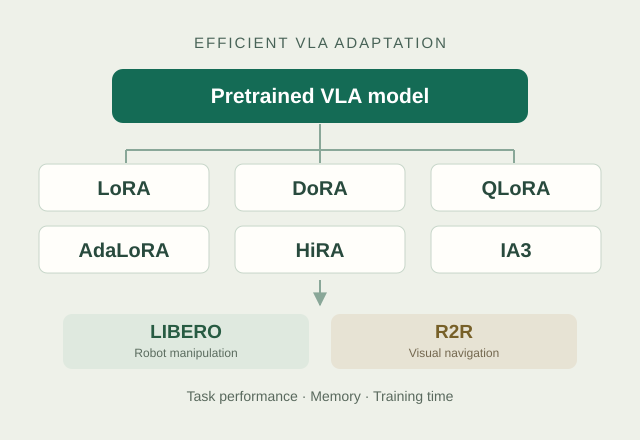
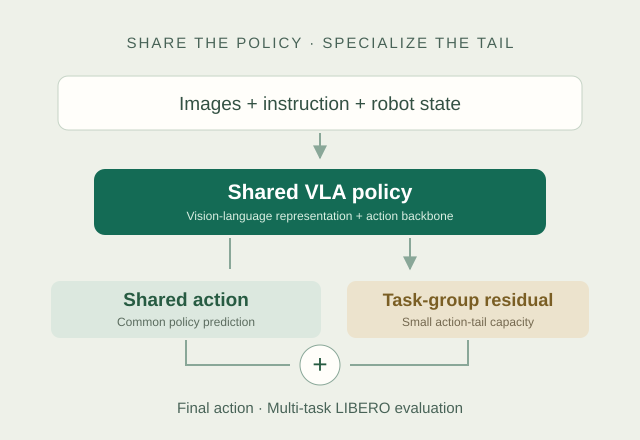

真实双 UR5 实验平台
真实双 UR5 实验平台
01 / META-MARL · SIM-TO-REALAAMAS 在投
DM-NAV：面向双臂动态避障的可部署元多智能体强化学习
学习可迁移的元策略，利用少量目标任务经验完成适应，再结合 RGB-D 感知与关节速度控制部署到真实双 UR5。
实验覆盖六种 MARL 基线与 14 种物理运动条件；结果对应稿件中的评测设置。
HUBEI UNIVERSITY EILAB
湖北大学人工智能学院研究生
研究机器人策略如何高效适应新任务，并从仿真走向真实系统。
依托 EILab，围绕视觉-语言-动作模型的高效适配、双臂元多智能体强化学习与真机部署开展研究。
研究也覆盖算法与系统实践：从 MuJoCo 中的跨任务训练和动态避障，到双 UR5 平台上的 RGB-D 感知、关节速度控制与真机部署。两项相关工作目前正在 AAMAS 2027 审稿，分别是研究双臂动态避障的 DM-NAV，以及视觉-语言-动作模型参数高效微调的实证研究；VLA-MoE 方向仍在推进。
精选研究
两篇 AAMAS 在投 · 一项持续研究
真实双 UR5 实验平台
学习可迁移的元策略，利用少量目标任务经验完成适应，再结合 RGB-D 感知与关节速度控制部署到真实双 UR5。
实验覆盖六种 MARL 基线与 14 种物理运动条件；结果对应稿件中的评测设置。

研究示意 · 六种 PEFT 方法比较 LoRA、DoRA、QLoRA、AdaLoRA、HiRA 与 IA3 在 LIBERO 操作和 R2R 导航中的表现，分析任务性能、显存占用与训练时间。
主要发现：方法优势随任务变化，显存节省与训练速度需要分别评估。

研究示意 · 动作末端残差研究多任务策略应在何处引入任务专属容量：保留共享视觉语言表示与动作主干，在最终动作投影处加入极小任务组残差。
已完成四训练种子阶段结果；继续补齐匹配 Dense 基线与更小替代方案，稳定性优势仍待验证。
研究进展
DM-NAV 稿件 AAMAS 在投。专题已整理方法与真机评测。
VLA 参数高效微调实证研究 AAMAS 在投。稿件覆盖操作与导航两类任务。
VLA-MoE 已整理多训练种子阶段结果。下一步补齐公平基线与最小替代验证。
系统与应用
教育与服务
2025 - 至今
人工智能专业研究生
EILab ↗开展具身智能、机器人学习与真实系统部署相关研究。
《Python》《人工智能基础》课程助教
参与实验教学支持、作业反馈、考试准备、监考与阅卷。
Python · PyTorch · Linux · LaTeX
ROS 2 · MuJoCo · Docker · CUDA
交流与合作
欢迎就 VLA、元多智能体学习与机器人操作交流。